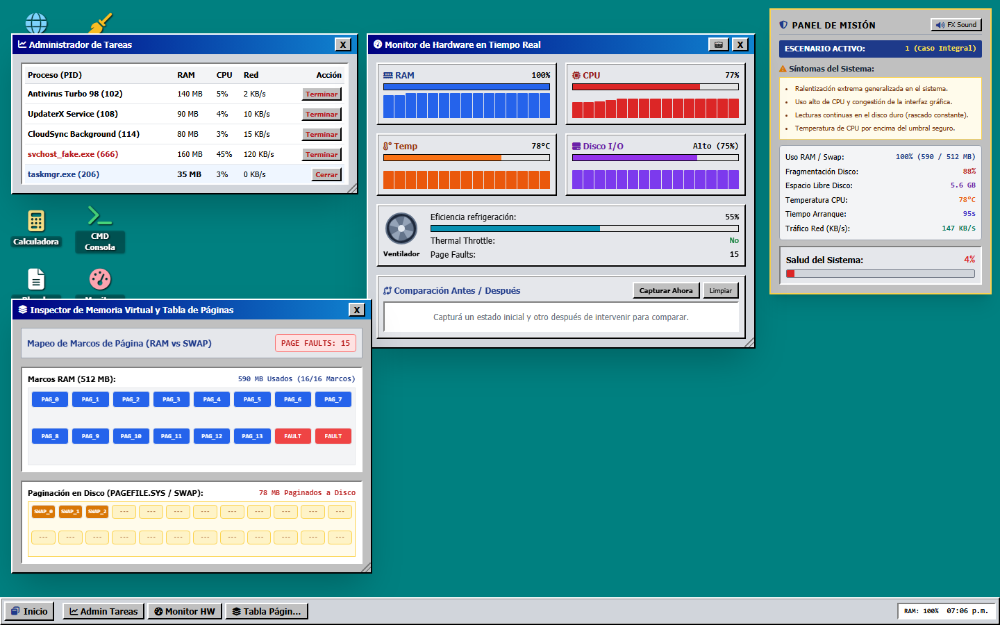
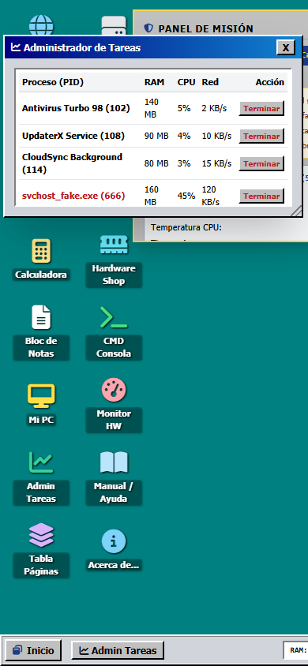

Free · No install · Works offline
Learn PC troubleshooting by breaking things a little
SimLab Software is a desktop simulator with a Windows 98 look: students open a faulty PC, read RAM, CPU, disk and temperature, and fix the problem with real maintenance tools.
Runs in the browser, and also from a folder or a USB stick, with no server and no connection.

What you get
A full maintenance lab inside the browser, with no licences or accounts.
-
A simulated operating system
Desktop, draggable windows, taskbar and live-generated retro sounds. Every action is written to an audit log.
-
Metrics that react
RAM and swap with page faults and thrashing, temperature and thermal throttling, disk fragmentation, network traffic and a system health score.
-
Technician tools
Task Manager, Page Table, Hardware Monitor, Defragmenter, Disk Cleaner, MSConfig, Hardware Shop and a CMD console.
-
Ready for the classroom
12 faulty scenarios, a fault injector for the teacher, a timed exam mode and reports exported to PDF, CSV or TXT.
How it looks
Screenshots of the real simulator, on desktop and on a phone.

Twelve faults to diagnose
Each scenario ships with symptoms, altered metrics and an expected correction guide.
-
01
Full case
Low RAM, malware, a fragmented disk and high temperature on the same machine.
-
02
Thrashing
Rising page faults and a full swap file: there is not enough physical memory.
-
03
Cybersecurity
A process imitating a system binary eats CPU and network in the background.
-
04
Hardware and disk
Extreme fragmentation, temporary files and poor cooling.
-
05
Slow boot
Too many startup programs: the machine takes minutes to become usable.
-
06
CPU saturation
A heavy process takes the whole CPU even though plenty of RAM is free.
Scenarios 7 to 12 cover HDD versus SSD, overheating, a nearly full disk, software conflicts, network faults and an upgrade on a limited budget.
| Symptom | Tool | Fix |
|---|---|---|
| The PC crawls and the disk never stops working | Page Table | Add physical RAM in the Hardware Shop and check that page faults drop |
| High CPU and network with no user activity | Task Manager / CMD | Find and kill the malicious process, then remove it from startup with MSConfig |
| It shuts down or slows after a few minutes | Hardware Monitor | Check cooling efficiency and confirm the temperature comes down |
| The disk is full and everything is slow | Disk Cleaner / Defragmenter | Delete temporary files, defragment the HDD and verify the free space |
For teachers
The material to teach with already ships inside the simulator.
Protected access
The teacher panel opens with a password stored as a SHA-256 hash, and it can be changed on first login.
Fault injector
During class you can trigger overheating, swap pressure, a heavy process or malware and watch each group react.
Automatic grading
Exam mode scores both results and procedure: what was diagnosed, what was fixed and in which order.
A 45-minute lesson
- Pick a scenario, load it and project the desktop while you explain the symptoms.
- Each group measures with the Hardware Monitor and the Page Table before touching anything.
- Students fix the fault with the tools and verify the result in CMD.
- Close with the correction guide and the notes the teacher panel leaves behind.
The rubric the exam applies
- Results: malware removed, enough RAM, temperature and disk in range, network working.
- Procedure: use the right tools and never defragment an SSD.
- Order: diagnose before fixing and verify after every change.
- Group work: up to 8 students per team, with course and division in the report.
Get started in a minute
No sign-up, no install and no dependency on the classroom connection.
-
1
Open the simulator
It opens in the browser and that is it: no accounts, no downloads.
-
2
Pick a scenario
Scenario 1 is already loaded at startup; the rest are picked from the mission panel.
-
3
Save your work
Progress stays in the browser and the exam report exports to PDF, CSV or TXT.
A console to practise
The simulator CMD understands the commands a real repair shop uses:
help · tasklist · taskkill /PID 666 · mem · systeminfo · defrag · ipconfig · netfix · coolfix
Support the project
The simulator is free and ad-free. If it helps you teach, these are the ways to give back.
Mention the project
Tell colleagues and students where you got it, or share the link in your class material.
Donation (optional)
If you like the simulator, a mention or a donation for the author is up to you.
Cafecito: Argentina and Mercado Pago · Ko-fi: international.
Licence and rights
© 2026 Hugo Martín Villalba
Distributed under the MIT License
If you like the simulator, a mention or a donation for the author is up to you.
The code may be used, copied, modified and redistributed, including in class, keeping the copyright notice. It is provided as is, without warranty.
Read the full licenceOpen source
The project is MIT: use it in class, change it and share it.